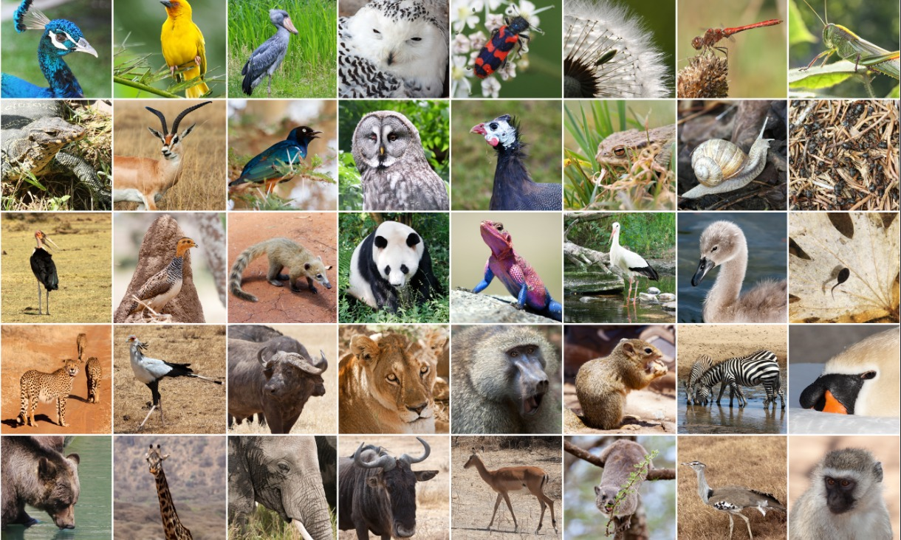

Animals have been a comfort to me ever since. Animals are a vast and fascinating group of living organisms that share some key characteristics. They are multicellular eukaryotes, meaning their cells have a nucleus and are organized into tissues and organs. Most animals are mobile, allowing them to search for food, escape danger, and find mates.
This incredible animal web boasts a mind-boggling diversity. From the towering giants like giraffes to the microscopic plankton in the oceans, animals have adapted to thrive in every corner of the planet, from the scorching deserts to the freezing poles.
This webpage will take you on a journey to explore the wonders of the animal kingdom. We'll delve into different animal groups of my fave, their unique behaviors, and the vital role they play in our ecosystems. So, buckle up and get ready to discover the amazing web world of animals!

Multicellular Eukaryotes: Animals have complex bodies made up of many cells with a nucleus (unlike bacteria). These cells are organized into tissues and organs for specific functions.
Vast Diversity: The animal kingdom is incredibly diverse, with millions of species categorized into different groups based on shared characteristics.
Habitat Specialists: Animals have adapted to thrive in a wide range of habitats, from the deepest ocean trenches to the highest mountain peaks.
Essential for Ecosystems: Animals play crucial roles in maintaining healthy ecosystems. They act as predators, prey, pollinators, and decomposers, keeping the natural world in balance.
Amazing Adaptations: Animals have evolved incredible adaptations to survive in their environments. These include camouflage, bioluminescence, echolocation, and specialized body structures.
Intelligence and Communication: Some animals exhibit remarkable intelligence and complex communication methods.
Endangered Species: Sadly, many animal species are threatened due to habitat loss, climate change, and human activity.